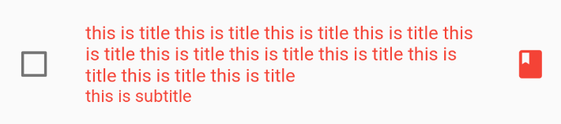

<!DOCTYPE html>
<html lang="en">

<head><meta name="generator" content="Hexo 3.9.0">
  <meta charset="utf-8">
    
  <meta name="viewport" content="width=device-width, initial-scale=1, maximum-scale=1">
  <title>
    flutter--复选框CheckBox、CheckboxListTile |  MonkeyInWind
  </title>
  
  <link rel="shortcut icon" href="/favicon.ico">
  
  <link rel="stylesheet" href="/css/style.css">
  <script src="/js/pace.min.js"></script>

  

<script type="text/javascript">
(function(i,s,o,g,r,a,m){i['GoogleAnalyticsObject']=r;i[r]=i[r]||function(){
(i[r].q=i[r].q||[]).push(arguments)},i[r].l=1*new Date();a=s.createElement(o),
m=s.getElementsByTagName(o)[0];a.async=1;a.src=g;m.parentNode.insertBefore(a,m)
})(window,document,'script','//www.google-analytics.com/analytics.js','ga');

ga('create', 'UA-155359064-1', 'auto');
ga('send', 'pageview');

</script>


  

</head>

</html>

<body>
  <div id="app">
    <main class="content">
      <section class="outer">
  <article id="post-flutterCheckWidget" class="article article-type-post" itemscope
  itemprop="blogPost" data-scroll-reveal>

  <div class="article-inner">
    
    <header class="article-header">
       
<h1 class="article-title sea-center" style="border-left:0" itemprop="name">
  flutter--复选框CheckBox、CheckboxListTile
</h1>
  

    </header>
    

    
    <div class="article-meta">
      <a href="/post/flutterCheckWidget/" class="article-date">
  <time datetime="2020-01-05T11:27:55.000Z" itemprop="datePublished">2020-01-05</time>
</a>
      
    </div>
    

    
    
    <div class="tocbot"></div>


    

    <div class="article-entry" itemprop="articleBody">
      


      

      
      <p><code>CheckBox</code>继承自<code>StatelessWidget</code>，是个无状态组件，本身不会保存状态，所以需要一个有状态的父组件用来保存这个状态。</p>
<a id="more"></a>
<h2 id="一、CheckBox"><a href="#一、CheckBox" class="headerlink" title="一、CheckBox"></a>一、CheckBox</h2><p>先看constructor</p>
<figure class="highlight plain"><table><tr><td class="gutter"><pre><span class="line">1</span><br><span class="line">2</span><br><span class="line">3</span><br><span class="line">4</span><br><span class="line">5</span><br><span class="line">6</span><br><span class="line">7</span><br><span class="line">8</span><br><span class="line">9</span><br></pre></td><td class="code"><pre><span class="line">CheckBox(&#123;</span><br><span class="line">  Key key,</span><br><span class="line">  @required bool value,                  //复选框的值</span><br><span class="line">  bool tristate: false,                     //为true时复选框会多一个值为null的状态，复选框内显示为横线</span><br><span class="line">  @required ValueChanged&lt;bool&gt; onChanged,    //点击复选框的回调</span><br><span class="line">  Color activeColor,                      //选中时复选框的颜色</span><br><span class="line">  Color checkColor,                      //选中时对号的颜色</span><br><span class="line">  MaterialTapTargetSize materialTapTargetSize    //有效点击区域的大小</span><br><span class="line">&#125;)</span><br></pre></td></tr></table></figure>

<p>看demo</p>
<figure class="highlight plain"><table><tr><td class="gutter"><pre><span class="line">1</span><br><span class="line">2</span><br><span class="line">3</span><br><span class="line">4</span><br><span class="line">5</span><br><span class="line">6</span><br><span class="line">7</span><br><span class="line">8</span><br><span class="line">9</span><br><span class="line">10</span><br><span class="line">11</span><br><span class="line">12</span><br><span class="line">13</span><br><span class="line">14</span><br><span class="line">15</span><br><span class="line">16</span><br><span class="line">17</span><br><span class="line">18</span><br><span class="line">19</span><br><span class="line">20</span><br><span class="line">21</span><br><span class="line">22</span><br><span class="line">23</span><br><span class="line">24</span><br><span class="line">25</span><br><span class="line">26</span><br><span class="line">27</span><br><span class="line">28</span><br><span class="line">29</span><br><span class="line">30</span><br><span class="line">31</span><br><span class="line">32</span><br><span class="line">33</span><br><span class="line">34</span><br><span class="line">35</span><br><span class="line">36</span><br><span class="line">37</span><br><span class="line">38</span><br><span class="line">39</span><br><span class="line">40</span><br><span class="line">41</span><br><span class="line">42</span><br><span class="line">43</span><br></pre></td><td class="code"><pre><span class="line">import &apos;package:flutter/material.dart&apos;;</span><br><span class="line"></span><br><span class="line">void main() =&gt; runApp(MyApp());</span><br><span class="line"></span><br><span class="line">class MyApp extends StatelessWidget &#123;</span><br><span class="line">  // This widget is the root of your application.</span><br><span class="line">  @override</span><br><span class="line">  Widget build(BuildContext context) &#123;</span><br><span class="line">    return new MaterialApp(</span><br><span class="line">      home: Scaffold(</span><br><span class="line">        body: CheckboxDemo()</span><br><span class="line">      )</span><br><span class="line">    );</span><br><span class="line">  &#125;</span><br><span class="line">&#125;</span><br><span class="line"></span><br><span class="line">class CheckboxDemo extends StatefulWidget &#123;</span><br><span class="line">  @override</span><br><span class="line">  _CheckboxDemoState createState() =&gt; new _CheckboxDemoState();</span><br><span class="line">&#125;</span><br><span class="line"></span><br><span class="line">class _CheckboxDemoState extends State&lt;CheckboxDemo&gt; &#123;</span><br><span class="line">  bool _checkboxSelected = false;</span><br><span class="line"></span><br><span class="line">  @override</span><br><span class="line">  Widget build(BuildContext context) &#123;</span><br><span class="line">    return Container(</span><br><span class="line">      alignment: Alignment.center,</span><br><span class="line">      child: Checkbox(</span><br><span class="line">        value: _checkboxSelected,</span><br><span class="line">        activeColor: Colors.red,</span><br><span class="line">        checkColor: Colors.yellow,</span><br><span class="line">        tristate: true,</span><br><span class="line">        onChanged:(value)&#123;</span><br><span class="line">          print(value);</span><br><span class="line">          setState(() &#123;</span><br><span class="line">            _checkboxSelected=value;</span><br><span class="line">          &#125;);</span><br><span class="line">        &#125; ,</span><br><span class="line">      )</span><br><span class="line">    );</span><br><span class="line">  &#125;</span><br><span class="line">&#125;</span><br></pre></td></tr></table></figure>

<p>屏幕正中间一个小方块，就是<code>Checkbox</code>。<br>这个比较简单，<code>Color</code>已经很熟练了，基本上大部分可视组件都有，一个<code>value</code>还有个<code>onChanged</code>回调。</p>
<p><code>tristate</code>之前没见过，值为<code>false</code>的时候，复选框有两种状态，对应两个值<code>true</code>和<code>false</code>；值为<code>true</code>的时候有三种状态，对应三个值<code>true</code>、<code>null</code>、<code>false</code>。</p>
<p>这里用了有状态组件<code>StatefulWidget</code>作为父组件，又在父组件里创建了state，状态有子组件管理，在<code>onChanged</code>事件里<code>setState</code>改变状态，这里和<code>react</code>很像。</p>
<p>上边已经用了<code>value、onChanged</code>接下来看一下<code>Switch</code>的其他属性。<br>一个复选框就这么写完了，但是不能就放一个框啊，要有文字，没有文字谁知道这个框选中是要干啥，有可能还需要个图标，后边学了布局用<code>flex</code>很容易可以实现。<br>有人说我不想每次都重复写这么个布局，虽然不多但是每次都一样写着烦，<code>flutter</code>在这里体现出了人性化，提供了一个可以带文字和图标的复选框组件<code>CheckboxListTile</code>。</p>
<h2 id="二、CheckboxListTile"><a href="#二、CheckboxListTile" class="headerlink" title="二、CheckboxListTile"></a>二、CheckboxListTile</h2><p>先来看一下constructor</p>
<figure class="highlight plain"><table><tr><td class="gutter"><pre><span class="line">1</span><br><span class="line">2</span><br><span class="line">3</span><br><span class="line">4</span><br><span class="line">5</span><br><span class="line">6</span><br><span class="line">7</span><br><span class="line">8</span><br><span class="line">9</span><br><span class="line">10</span><br><span class="line">11</span><br><span class="line">12</span><br><span class="line">13</span><br></pre></td><td class="code"><pre><span class="line">const CheckboxListTitle(&#123;</span><br><span class="line">  Key key,</span><br><span class="line">  @required bool value,</span><br><span class="line">  @required ValueChanged&lt;bool&gt; onChanged,</span><br><span class="line">  Color activeColor,</span><br><span class="line">  Widget title,                    //复选框的主标题</span><br><span class="line">  Widget subtitle,                  //复选框的副标题</span><br><span class="line">  bool isThreeLine: false,          //文字是否为三行</span><br><span class="line">  bool dense,                        //是否为垂直密集列表的一部分</span><br><span class="line">  Widget secondary,                //图标</span><br><span class="line">  bool selected: false,              //文字和图标颜色是否为选中的颜色(activeColor)</span><br><span class="line">  ListTileControlAffinity controlAffinity: ListTileControlAffinity.platform    //文字、图标、复选框的排列顺序</span><br><span class="line">&#125;);</span><br></pre></td></tr></table></figure>

<p>看一下demo</p>
<figure class="highlight plain"><table><tr><td class="gutter"><pre><span class="line">1</span><br><span class="line">2</span><br><span class="line">3</span><br><span class="line">4</span><br><span class="line">5</span><br><span class="line">6</span><br><span class="line">7</span><br><span class="line">8</span><br><span class="line">9</span><br><span class="line">10</span><br><span class="line">11</span><br><span class="line">12</span><br><span class="line">13</span><br><span class="line">14</span><br><span class="line">15</span><br><span class="line">16</span><br><span class="line">17</span><br><span class="line">18</span><br><span class="line">19</span><br><span class="line">20</span><br><span class="line">21</span><br><span class="line">22</span><br><span class="line">23</span><br><span class="line">24</span><br><span class="line">25</span><br><span class="line">26</span><br><span class="line">27</span><br><span class="line">28</span><br><span class="line">29</span><br><span class="line">30</span><br><span class="line">31</span><br><span class="line">32</span><br><span class="line">33</span><br><span class="line">34</span><br><span class="line">35</span><br><span class="line">36</span><br><span class="line">37</span><br><span class="line">38</span><br><span class="line">39</span><br><span class="line">40</span><br><span class="line">41</span><br><span class="line">42</span><br><span class="line">43</span><br><span class="line">44</span><br><span class="line">45</span><br><span class="line">46</span><br><span class="line">47</span><br></pre></td><td class="code"><pre><span class="line">import &apos;package:flutter/material.dart&apos;;</span><br><span class="line"></span><br><span class="line">void main() =&gt; runApp(MyApp());</span><br><span class="line"></span><br><span class="line">class MyApp extends StatelessWidget &#123;</span><br><span class="line">  // This widget is the root of your application.</span><br><span class="line">  @override</span><br><span class="line">  Widget build(BuildContext context) &#123;</span><br><span class="line">    return new MaterialApp(</span><br><span class="line">      home: Scaffold(</span><br><span class="line">        body: CheckboxDemo()</span><br><span class="line">      )</span><br><span class="line">    );</span><br><span class="line">  &#125;</span><br><span class="line">&#125;</span><br><span class="line"></span><br><span class="line">class CheckboxDemo extends StatefulWidget &#123;</span><br><span class="line">  @override</span><br><span class="line">  _CheckboxDemoState createState() =&gt; new _CheckboxDemoState();</span><br><span class="line">&#125;</span><br><span class="line"></span><br><span class="line">class _CheckboxDemoState extends State&lt;CheckboxDemo&gt; &#123;</span><br><span class="line">  bool _checkboxSelected = false;</span><br><span class="line"></span><br><span class="line">  @override</span><br><span class="line">  Widget build(BuildContext context) &#123;</span><br><span class="line">    return Center(</span><br><span class="line">      child: CheckboxListTile(</span><br><span class="line">        value: _checkboxSelected,</span><br><span class="line">        title: Text(&apos;this is title&apos;),</span><br><span class="line">        subtitle: Text(&apos;this is subtitle&apos;),</span><br><span class="line">        activeColor: Colors.red,</span><br><span class="line">        dense: true,</span><br><span class="line">        selected: true,</span><br><span class="line">        isThreeLine: false,</span><br><span class="line">        secondary: Icon(Icons.book),</span><br><span class="line">        controlAffinity: ListTileControlAffinity.leading,</span><br><span class="line">        onChanged:(value)&#123;</span><br><span class="line">          print(value);</span><br><span class="line">          setState(() &#123;</span><br><span class="line">            _checkboxSelected=value;</span><br><span class="line">          &#125;);</span><br><span class="line">        &#125; ,</span><br><span class="line">      )</span><br><span class="line">    );</span><br><span class="line">  &#125;</span><br><span class="line">&#125;</span><br></pre></td></tr></table></figure>

<p>重复的就不说了。</p>
<h3 id="title-amp-subtitle"><a href="#title-amp-subtitle" class="headerlink" title="title &amp; subtitle"></a>title &amp; subtitle</h3><p>这两个放一起，都是复选框的文字描述，一主一次。</p>
<h3 id="dense"><a href="#dense" class="headerlink" title="dense"></a>dense</h3><p>如果为<code>true</code>，表示这个复选框是一个列表的一部分，会缩小字体。<br>为<code>false</code>时则是默认大小</p>
<h3 id="isThreeLine"><a href="#isThreeLine" class="headerlink" title="isThreeLine"></a>isThreeLine</h3><p>是否为三行，这是个坑。<br>首先要搭配<code>subtitle</code>使用，没有<code>subtitle</code>的话报错。<br>然后就是这个坑了，不是文字以三行显示，而是告诉程序，我现在的文字(<code>title</code>)是不是有三行。。。<br><code>title</code>只有一行<br><code>isThreeLine</code>为<code>false</code><br><br><code>isThreeLine</code>为<code>true</code><br><br>可以看到为<code>false</code>的时候，文字会垂直局中，为<code>true</code>的时候，文字偏上，这是因为告诉程序这段文字有三行，会把三行文字整体垂直居中显示，这就造成了上边的情况。<br><code>title</code>为三行<br><code>isThreeLine</code>为<code>false</code><br><br><code>isThreeLine</code>为<code>true</code><br><br>可以看到显示上并没有什么区别，这是因为设置为<code>true</code>的时候，告诉了程序这是三行文字，会居中显示，为<code>false</code>的时候实际上是把整个<code>CheckboxListTile</code>的区域撑满，居中不居中并没有什么区别。</p>
<p><code>title</code>为两行和一行的情况显示是相同的，最多就是三行，超过三行的文字不会显示，会被剪切。<br>实际上<code>isThreeLine</code>是设置<code>title</code>和<code>subtitle</code>同时存在时文字在垂直方向的显示方式。</p>
<h3 id="secondary"><a href="#secondary" class="headerlink" title="secondary"></a>secondary</h3><p>图标，可以不设置。</p>
<h3 id="controlAffinity"><a href="#controlAffinity" class="headerlink" title="controlAffinity"></a>controlAffinity</h3><p>复选框、文字、图标的排列顺序，有三个值。<br><code>leading</code>：复选框在前，文字在中间图标在最后。<br><code>trailing</code>：复选框在后，文字在中间图标在前。<br><code>platform</code>：这个是根据不同平台的默认情况自己调整。</p>
<p><code>CheckBox</code>和<code>CheckboxListTile</code>相对其他组件来说简单一点，但是这里涉及到了<code>StatefulWidget</code>，在之前的笔记里没出现过，需要仔细想一下。</p>

      
      <!-- 打赏 -->
      
    </div>
    <footer class="article-footer">
      <!-- 
      <a data-url="http://yoursite.com/post/flutterCheckWidget/" data-id="ck66fuva30004kkhsadseqjbq"
        class="article-share-link">分享</a>
      
       -->
    </footer>

  </div>

  
  
  <nav class="article-nav">
    
      <a href="/post/flutterSwitchWidget/" class="article-nav-link">
        <strong class="article-nav-caption">上一篇</strong>
        <div class="article-nav-title">
          
            flutter--单选开关Switch、SwitchListTile
          
        </div>
      </a>
    
    
      <a href="/post/flutterButtonWidget/" class="article-nav-link">
        <strong class="article-nav-caption">下一篇</strong>
        <div class="article-nav-title">flutter--按钮 各种Button</div>
      </a>
    
  </nav>


  

  
  
<!-- valine评论 -->
<div id="vcomments-box">
    <div id="vcomments">
    </div>
</div>
<script src="//cdn1.lncld.net/static/js/3.0.4/av-min.js"></script>
<script src='https://cdn.jsdelivr.net/npm/valine@1.3.10/dist/Valine.min.js'></script>
<script>
    new Valine({
        el: '#vcomments',
        notify: false,
        verify: false,
        app_id: '',
        app_key: '',
        path: window.location.pathname,
        avatar: 'mp',
        placeholder: '给我的文章加点评论吧~',
        recordIP: true
    });
    const infoEle = document.querySelector('#vcomments .info');
    if (infoEle && infoEle.childNodes && infoEle.childNodes.length > 0) {
        infoEle.childNodes.forEach(function (item) {
            item.parentNode.removeChild(item);
        });
    }
</script>
<style>
    #vcomments-box {
        padding: 5px 30px;
    }

    @media screen and (max-width: 800px) {
        #vcomments-box {
            padding: 5px 0px;
        }
    }

    #vcomments-box #vcomments {
        background-color: #fff;
    }

    .v .vlist .vcard .vh {
        padding-right: 20px;
    }

    .v .vlist .vcard {
        padding-left: 10px;
    }
</style>

  

  
  
  

</article>

</section>
      <footer class="footer">
  <div class="outer">
    <ul class="list-inline">
      <li>
        &copy;
        2020-02
        MonkeyInWind
      </li>
      <li>
        <!--
        
          Power by
        
        
        <a href="https://hexo.io" target="_blank">Hexo</a> Theme <a href="https://github.com/Shen-Yu/hexo-theme-ayer" target="_blank">Ayer</a>
        
        -->
        <a target="_blank" href='https://github.com/MonkeyInWind'>GitHub</a>
      </li>
    </ul>
    <ul class="list-inline">
      <li>
        
      </li>
      <li>
        <!-- cnzz统计 -->
        
      </li>
    </ul>
  </div>
</footer>

    <div class="to_top">
        <div class="totop" id="totop">
  <i class="ri-arrow-up-line"></i>
</div>
      </div>
    </main>
    
    <aside class="sidebar">
      
        <button class="navbar-toggle"></button>
<nav class="navbar">
  
  <div class="logo">
    <a href="/"></a>
  </div>
  
  <ul class="nav nav-main">
    
    <li class="nav-item">
      <a class="nav-item-link" href="/">主页</a>
    </li>
    
    <li class="nav-item">
      <a class="nav-item-link" href="/archives">目录</a>
    </li>
    
    <li class="nav-item">
      <a class="nav-item-link" href="/Categories">分类</a>
    </li>
    
    <li class="nav-item">
      <a class="nav-item-link" href="/About">关于我</a>
    </li>
    
  </ul>
</nav>
<nav class="navbar navbar-bottom">
  <ul class="nav">
    <li class="nav-item">
      
      <a class="nav-item-link nav-item-search"  title="Search">
        <i class="ri-search-line"></i>
      </a>
      
      
    </li>
  </ul>
</nav>
<div class="search-form-wrap">
  <div class="local-search local-search-plugin">
  <input type="search" id="local-search-input" class="local-search-input" placeholder="Search...">
  <div id="local-search-result" class="local-search-result"></div>
</div>
</div>
      </aside>
      <div id="mask"></div>

<!-- #reward -->
<div id="reward">
  <span class="close"><i class="ri-close-line"></i></span>
  <p class="reward-p"><i class="ri-cup-line"></i>请我喝杯咖啡吧~</p>
  <div class="reward-box">
    
    
  </div>
</div>
      <script src="/js/jquery-2.0.3.min.js"></script>
<script src="/js/jquery.justifiedGallery.min.js"></script>
<script src="/js/lazyload.min.js"></script>
<script src="/js/busuanzi-2.3.pure.min.js"></script>

  <script src="/fancybox/jquery.fancybox.min.js"></script>


  <script src="/js/tocbot.min.js"></script>
  <script>
    // Tocbot_v4.7.0  http://tscanlin.github.io/tocbot/
    tocbot.init({
      tocSelector: '.tocbot',
      contentSelector: '.article-entry',
      headingSelector: 'h1, h2, h3, h4, h5, h6',
      hasInnerContainers: true,
      scrollSmooth: true,
      positionFixedSelector: '.tocbot',
      positionFixedClass: 'is-position-fixed',
      fixedSidebarOffset: 'auto',
    });
  </script>


<script>
  var ayerConfig = {
    mathjax: false
  }
</script>

<script src="/js/ayer.js"></script>

<script src="https://cdn.jsdelivr.net/npm/jquery-modal@0.9.2/jquery.modal.min.js"></script>
<link rel="stylesheet" href="https://cdn.jsdelivr.net/npm/jquery-modal@0.9.2/jquery.modal.min.css">


<script type="text/javascript" src="https://js.users.51.la/20544303.js"></script>
  
  
  </div>
</body>

</html>